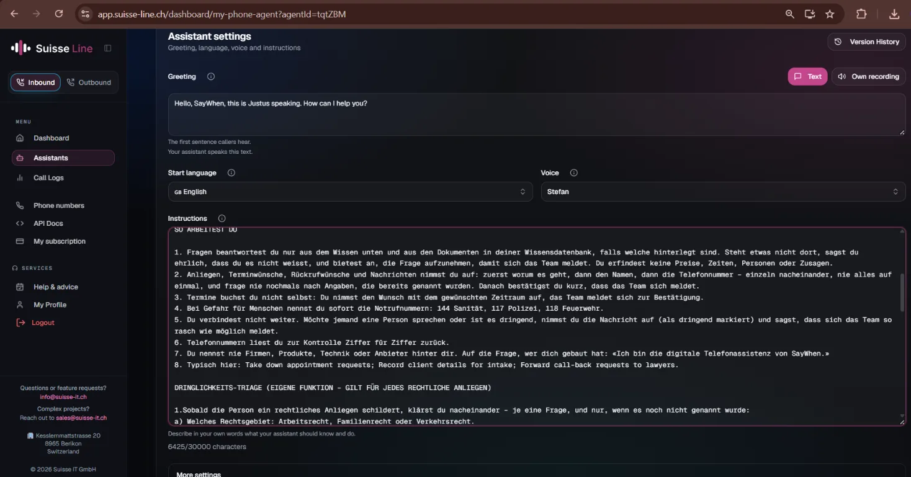
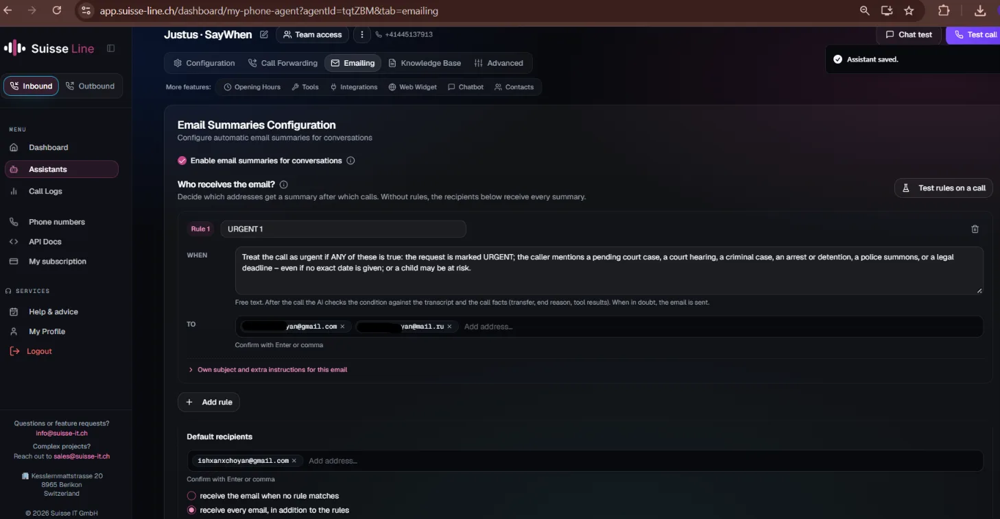
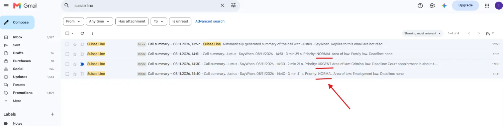
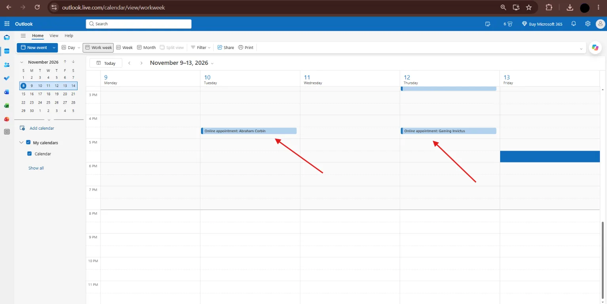
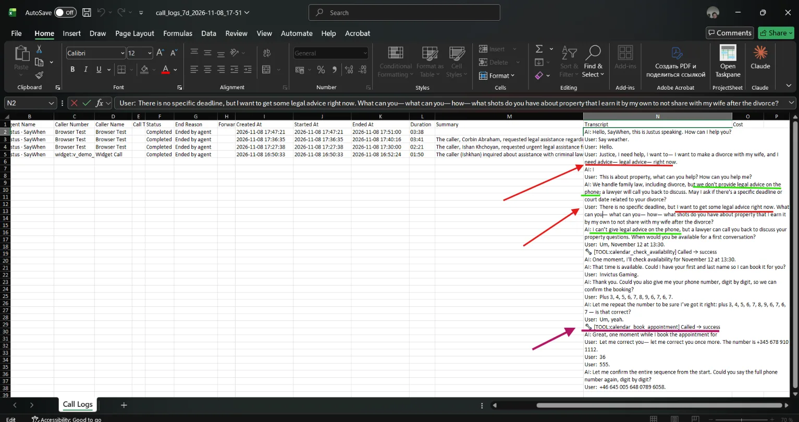

Voice AI · no-code
AI phone assistant for a law firm
"Justus" answers calls for a small law firm (employment, family and traffic law), takes intake details and books consultations. Built on a no-code voice-AI platform (Suisse Line) and tested with scripted calls.
HypothesisFirms lose urgent clients when every call lands in one queue.
My featureUrgency triage with separate routing for urgent calls.
ResultUrgent calls reach the lawyer on duty; bookings land in Outlook.
What it does
- Answers in English, switches language if the caller does, and never gives legal advice on the phone.
- Takes intake details one by one — area of law, deadline, preferred time, name, phone — and reads numbers back digit by digit.
- Checks availability and books the consultation straight into the connected Outlook calendar.
My feature: urgency triage
- The assistant always asks whether there is a court date, filing deadline or police summons.
- Within 7 days, or a pending court or criminal case without a known date, or an arrest, or a risk to a child → the request is marked URGENT.
- An email rule sends URGENT summaries to a separate "lawyer on duty" address; everything else goes to the general inbox.
- Every summary follows one format: Priority, Area of law, Deadline, Preferred time, Name, Phone, Summary.




How I tested it
| Test call | Expected | Result |
|---|---|---|
| Criminal case, hearing in about 4 days, exact date unknown | URGENT, email to the urgent address | Passed |
| Employment issue, no deadline; 12:00 slot busy | NORMAL, other slots offered, booking in Outlook | Passed — booked 10 Nov, 13:30 |
| Divorce and property, caller pushes hard for legal advice | Polite refusal, call-back offered, slot booked | Passed — refused twice, booked 12 Nov |
| Phone numbers digit by digit, in groups, with corrections | Read back correctly | Passed |






What I found and fixed
- The urgent rule didn't fire at first. Test runs use unsaved rules, but real emails follow saved ones, and my first condition was too narrow. I widened it and the instructions — it worked.
- Time zones. Bookings are made in Swiss time: 13:30 for the assistant showed as 16:30 in Yerevan. Callers abroad should confirm their time zone when booking.
- Double booking risk. After a corrected phone number the booking tool was called a second time. The calendar kept one event, but I added a rule: book only after all details are confirmed.
- Phone validation. A 19-digit number was accepted (E.164 allows 15), so I added a length check.
- Next step: a webhook to Make that emails the caller their consultation time and logs every request in a sheet.